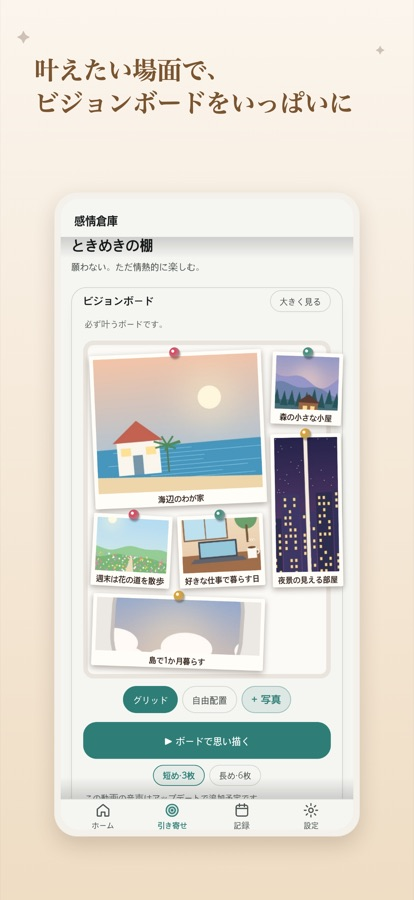
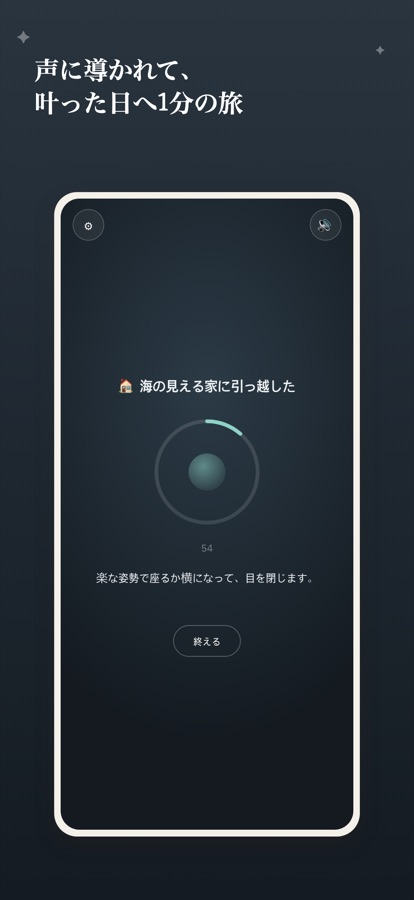
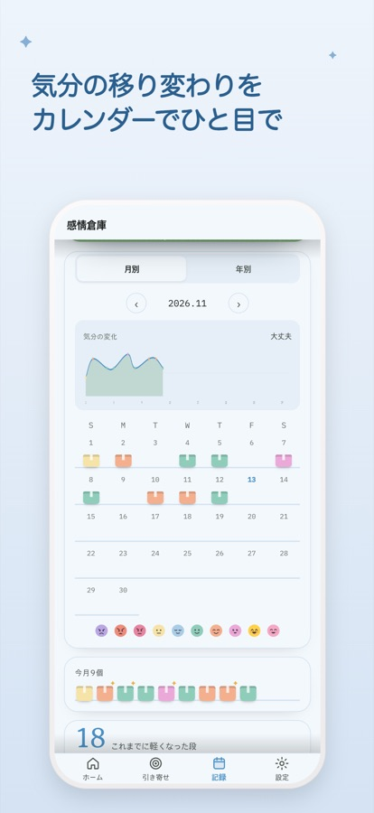

ストレス発散 · 気分日記 · 引き寄せ
ストレスは手放して、
今日の気持ちはしまって、
望む人生は引き寄せる。
感情倉庫は、ストレス発散アプリと気分日記アプリをひとつにしました。気分を記録し、手でストレスを発散し、呼吸を整えて一日をしまいます。引き寄せ日記を書き、ビジョンボードはウィジェットでホーム画面に。








心のケアに必要なものを、ひとつのアプリに
気分日記・気分トラッカー
今日の気分を色で選び、短い日記を残します。カレンダーで日・月・年ごとの変化がわかります。
20種類以上のストレス発散
お皿を割る、紙を破る、缶をつぶす、プチプチ、叫ぶ。イライラした時のストレス発散ゲームです。
本物のような音
ガラス、木、火、水、ワックス、金属。それぞれの音と振動で、体ごと手放せます。
呼吸法・瞑想
ボックス呼吸、4-7-8呼吸、ため息呼吸。不安な時や寝る前に1分で落ち着けます。
引き寄せ日記
叶ったつもりで1日1行。引き寄せの法則を毎日の習慣にします。
1分イメージング
目を閉じて、やさしい声と一緒に願いが叶った日へ。男性・女性の声を選べます。
ビジョンボード・ウィジェット
叶えたい場面の写真を貼り、フレームやピンで飾って、ホーム画面に置けます。
ステートマップ・アファメーション
なりたい自分を描き、短いアファメーションにして毎日読みます。
心の道具箱
応急カード、感情辞典、自分を愛する6枚、手放す6枚、7日間のセルフケアコース。
心の木・月間まとめ
記録するたびに木に葉が増えます。前の月の木は裏庭に移り、森になります。
こんな人が使っています
仕事で叫びたくなった時
誰かにぶつける代わりにスイカを割り、紙を破ります。2分で肩の力が抜けます。
怒りで何も考えられない時
SOSボタンなら何も選ばず、すぐ呼吸に進めます。
自分の気分のパターンを知りたい時
気分日記を続けると、どの曜日・時間・理由で心が重くなるかが見えます。
引き寄せの法則を実践したい時
引き寄せ日記、ビジョンボード、1分イメージングがひとつに。
夜、考えが止まらない時
4-7-8呼吸と寝る前の整理で、一日を手放します。
自分に厳しすぎる時
自分を愛するカードが、友だちに話すように自分に話す方法を教えてくれます。
よくある質問
感情倉庫は無料ですか？
はい。気分記録、いくつかの発散方法、呼吸、記録の閲覧は無料です。Proではすべての発散方法、心の道具箱、ビジョンボードの写真追加が使えます。Proの利用券は自動更新されません。
会員登録は必要ですか？
いいえ。登録なしですぐ使えます。日記と写真はスマホの中だけに保存され、ファイルで自分でバックアップできます。
叫ぶモードで録音しますか？
いいえ。マイクは音の大きさだけを読み取って画面を動かします。録音も送信もしません。
ストレス発散アプリですか、引き寄せアプリですか？
両方です。まず溜まった感情を手放し、それから引き寄せ日記を書いてビジョンボードを見ます。心が軽いほど、望む場面もはっきりします。
ビジョンボードをホーム画面に置けますか？
はい。iPhone・Androidで感情倉庫のウィジェットを追加すると、ビジョンボードの写真がホーム画面で切り替わります。
カウンセリングの代わりになりますか？
いいえ。日常のストレスのためのセルフケアツールです。危機的な状況では、アプリが相談窓口の番号を表示します。
今日の気持ちを、そっと倉庫にしまいましょう。
お問い合わせ
ご質問やご意見はメールでお送りください。すべて読んでいます。
gasmon0@gmail.com